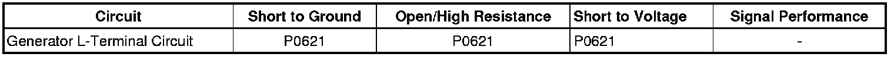

P0621
DTC P0621
Diagnostic Instructions
* Perform the Diagnostic System Check - Vehicle (Initial Inspection and Diagnostic Overview) prior to using this diagnostic procedure.
* Review Strategy Based Diagnosis (Initial Inspection and Diagnostic Overview) for an overview of the diagnostic approach.
* Diagnostic Procedure Instructions (Initial Inspection and Diagnostic Overview) provides an overview of each diagnostic category.
DTC Descriptor
DTC P0621
- Generator L-Terminal Circuit
Diagnostic Fault Information

Circuit/System Description
The engine control module (ECM) uses the generator turn ON signal circuit to control the load of the generator on the engine. A high side driver in the ECM applies a voltage to the voltage regulator. This signals the voltage regulator to turn the field circuit ON and OFF. The ECM monitors the state of the generator turn ON signal circuit. The ECM should detect low voltage on generator turn on signal circuit when the ignition is ON and the engine is OFF, or when the charging system malfunctions. With the engine running, the ECM should detect high voltage on the generator turn on signal circuit. The ECM performs the Ignition ON and RUN tests to determine the status of the generator turn on signal circuit.
Conditions for Running the DTC
* No generator, crankshaft position (CKP) sensors, or camshaft position (CMP) sensor DTCs are set.
* The ignition ON engine OFF for ignition on test.
* The engine is running for the run test.
Conditions for Setting the DTC
* During the ignition on test, the ECM detects high voltage on the generator turn on signal circuit for at least 5 seconds.
* During the run test, the ECM detects low voltage on the generator turn on signal circuit for at least 15 seconds.
Action Taken When the DTC Sets
DTC P0621 is a C type DTC.
Conditions for Clearing the DTC
DTC P0621 is a C type DTC.
Reference Information
Schematic Reference
Starting and Charging Schematics ([1][2]Electrical Diagrams)
Connector End View Reference
Component Connector End Views (Connector Views)
Description and Operation
Charging System Description and Operation (Description and Operation)
Electrical Information Reference
* Circuit Testing (Component Tests and General Diagnostics)
* Connector Repairs (Component Tests and General Diagnostics)
* Testing for Intermittent Conditions and Poor Connections (Component Tests and General Diagnostics)
* Wiring Repairs (Component Tests and General Diagnostics)
DTC Type Reference
Powertrain Diagnostic Trouble Code (DTC) Type Definitions (Diagnostic Trouble Code Descriptions)
Scan Tool Reference
Control Module References (Programming and Relearning) for scan tool information
Circuit/System Verification
Observe the scan tool ECM Generator-L Terminal Circuit Status parameter. The reading should display OK.
If the parameter displayed is not OK, refer to Circuit/System Testing.
Circuit/System Testing
1. Ignition OFF, disconnect the harness connector at the generator.
2. Ignition ON, test for less than 1 volt between the generator turn on signal circuit terminal 1 and ground.
• If greater than the specified range, test the generator turn on signal circuit for a short to voltage. If the circuit tests normal, replace the ECM.
3. Engine Running, test for greater than 3.5 volts between the generator turn on signal circuit terminal 1 and ground.
• If less than the specified range, test the generator turn on signal circuit for a short to ground or an open/high resistance. If the circuit tests normal, replace the ECM.
4. If the circuit tests normal, test or replace the generator.
Repair Instructions
Perform the Diagnostic Repair Verification (Verification Tests) after completing the diagnostic procedure.
* Control Module References (Programming and Relearning) for ECM replacement, setup, and programming
* Generator Replacement (LY7 - Gas, 6 Cylinder, 3.6L, SFI, V6) (Generator Replacement)Generator Replacement (LH2 (AWD)) (Generator Replacement)Generator Replacement (LH2 (RWD)) (Generator Replacement)